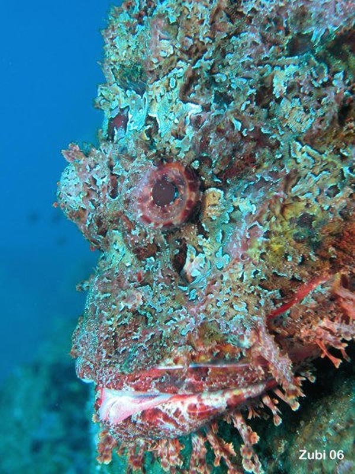
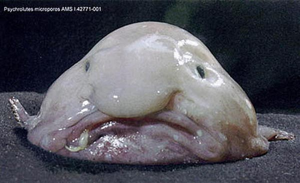
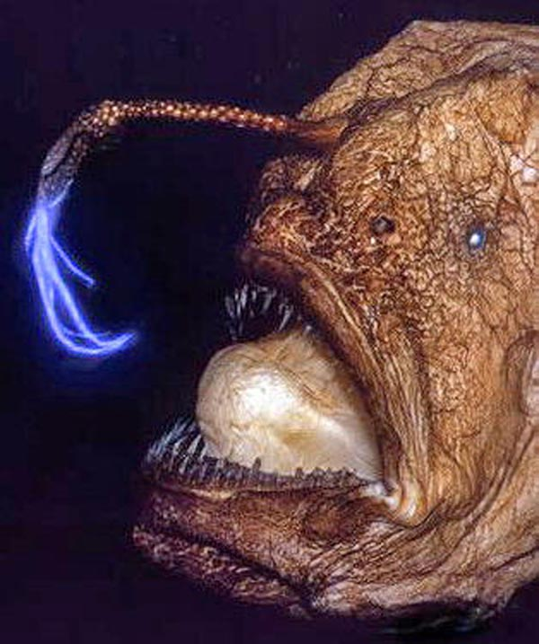
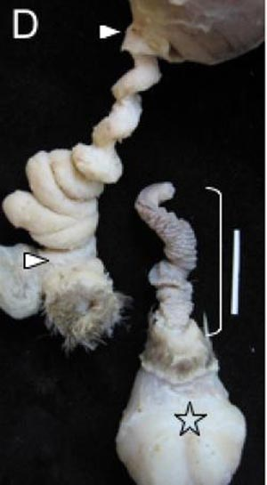

9. Этические и эстетические аргументы против креационизма
Аргументация, приведенная в этом разделе, не является научной в строгом смысле слова. Двое из авторов настоящей публикации (Н.М.Борисов и А.Б.Шипунов) не согласны с этой аргументацией, считая, что здесь делается попытка "доказать отсутствие бога". По мнению других, здесь нет попытки обосновать атеизм, а есть лишь попытка продемонстрировать нелогичность представлений о том, что существующие на земле виды живых существ были целенаправленно созданы сверхъестественной разумной силой.
Поскольку данный раздел был одобрен только частью авторского коллектива, мы просим рассматривать его в качестве дополнительного и помнить о том, что приведенная в нем аргументация, во-первых, не является строго научной, во-вторых, представляет собой личное мнение не всех, а только части авторов.
Содержание раздела:
Введение
За редкими исключениями, антиэволюционисты являются религиозными людьми, считающими, что эволюция противоречит их вере. Именно это и заставляет их искать аргументы против эволюции (хотя есть немало верующих, признающих эволюцию; см. "Вступительное слово"). Антиэволюционисты-безбожники – довольно редкое явление. Трудно быть одновременно антиэволюционистом и безбожником, потому что в таком случае у вас не остается вообще никаких внятных объяснений наблюдаемого на Земле огромного разнообразия и поразительной приспособленности (адаптированности) живых существ. Если не Бог и не эволюция – кто же тогда создал все это? То, что разнообразие и приспособленность живых существ нельзя объяснить «простой случайностью» – это чуть ли не единственное утверждение, по которому между эволюционистами и антиэволюционистами нет никаких разногласий.
Вопреки распространенному среди антиэволюционистов заблуждению, теория эволюции вовсе не предполагает, что разнообразие и приспособленность живых организмов объясняются «простой случайностью». Более или менее случайными являются только мутации, однако естественный отбор – процесс закономерный, и он придает эволюционным изменениям направленность и видимость осмысленности («разумного дизайна»). Хорошая аналогия: кристаллы образуются из хаотически («случайно») движущихся молекул, но физико-химические законы кристаллизации придают образующимся из этого хаоса кристаллам строго определенную форму и структуру.
Единственной логичной альтернативой эволюции является предположение о том, что живые существа являются результатом целенаправленного творчества некой разумной силы (идея «разумного замысла», или «разумного дизайна»). Но в таком случае у нас в руках огромный и разнообразный материал, позволяющий судить о свойствах, возможностях, личных качествах, морали и вкусах этой разумной силы. Точно так же, как по остаткам материальной культуры исчезнувшей цивилизации (например, древних египтян или майя) мы можем очень многое узнать о людях, создавших эту цивилизацию, так и биология должна давать богатейший материал для изучения личности предполагаемого Творца (или творцов, если это был творческий коллектив, а не мастер-одиночка). Именно так рассуждали и продолжают рассуждать многие религиозные мыслители-антиэволюционисты (классический труд в этой области: Paley, W. 1809. Natural Theology: or, Evidences of the Existence and Attributes of the Deity). Они видят в «совершенстве и гармонии природы» результат благонамеренных и мудрых действий Творца. Однако при ближайшем рассмотрении органический мир вовсе не производит впечатления сплошного «совершенства и гармонии».
В этом разделе мы рассмотрим ряд аргументов против теории «разумного замысла», которые вытекают из принятых среди религиозных антиэволюционистов этических и эстетических оценок явлений природы. Данные аргументы не являются научными в строгом смысле - мы просто попробуем поиграть немного по правилам, предлагемым религиозными антиэволюционистами, которые верят, что виды живых существ созданы Творцом, небезразличным к вопросам морали. С научной точки зрения, наблюдаемые факты совершенно однозначно свидетельствуют о том, что природа полностью индифферентна к человеческим представлениям о добре и зле или прекрасном и безобразном. Поэтому для науки рассматриваемые здесь примеры не представляют никакого парадокса. По ходу дела мы убедимся, насколько ненаучной и бесперспективной является сама идея применения к живой природе человеческих понятий о морали и красоте.
1. Необычайная любовь к жукам
Некоторые весьма яркие и характерные особенности живой природы выглядят в высшей степени странными, если пытаться увидеть в них результат чьего-то сознательного творчества. Согласно известному историческому анекдоту, выдающегося биолога Джона Холдейна однажды спросили, какие черты личности Создателя наиболее ярко проявились в его Творении. «Необычайная любовь к жукам» - ответил Холдейн. Действительно, кому могло понадобиться творить столько жуков? На сегодняшний день их известно около 350 тысяч видов (для сравнения, млекопитающих - около 6 тысяч видов). Жуки – самая разнообразная группа насекомых, а насекомые – самая разнообразная группа живых существ, значительно превосходящая по видовому богатству все остальные группы вместе взятые. Заметим, что для биологии немыслимое разнообразие жуков вовсе не представляет неразрешимой загадки (см.: Невероятное разнообразие жуков получило эволюционное объяснение). Большинство видов жуков – это малочисленные, малоизвестные, не играющие существенной экологической роли, можно сказать, «богом забытые» виды, рассеянные по тропическим лесам Африки, Азии и Америки. Здравый смысл нам подсказывает, что сотворить их мог только некто, одержимый неизъяснимой страстью к сотворению жуков. Другие группы насекомых ставят перед религиозными антиэволюционистами тот же вопрос. Например, зачем было творить на одних только Гавайских островах 500 эндемичных (нигде больше не встречающихся) видов плодовых мушек?
2. «Как бог черепаху»
Некоторые «творения» явно свидетельствуют либо о дурном вкусе, либо о некомпетентности предполагаемого "дизайнера". Приписывая авторство подобных "творений" богу, антиэволюционисты совершают что-то очень похожее на кощунство. Дизайн камбалообразных рыб, особенно анатомия их перекошенной, изуродованной, асимметричной головы, поражает своим безобразием и нерациональностью. Почему было не спроектировать камбал по образцу скатов, которые достигают той же цели (могут распластаться по дну и затаиться), сохраняя при этом симметрию и гармоничное соотношение частей тела? Для теории эволюции камбалы тоже долго представляли довольно сложную проблему, которая, однако, была успешно разрешена благодаря недавним палеонтологическим находкам (см.: Ископаемые рыбы в очередной раз подтвердили правоту Дарвина).

Скорпена
Можно привести очень много примеров причудливого и, по человеческим меркам, нелепого и уродливого «дизайна» в живой природе. Мальки некоторых рыб плавают, загребая глазами на длинных стебельках. Морской конек-тряпичник и скорпена выглядят по-идиотски в своих бесформенных кожных лохмотьях, служащих для маскировки. Глубоководные удильщики, подманивающие глупых рыбешек приманкой, похожей на червячка или просто кусочек какой-то аппетитной гадости, - еще одно яркое проявление дурного вкуса предполагаемого «дизайнера». Инстинкты многих животных тоже «спроектированы» не лучшим образом: как объяснить с антиэволюционных позиций, например, удивительную слепоту птиц-родителей, продолжающих честно кормить кукушонка даже тогда, когда он уже в несколько раз превосходит их по размеру и давно уже выкинул из гнезда их собственных птенцов? Причем, что самое удивительное, эти же птицы прекрасно умеют отличать чужие яйца от своих собственных, и поэтому кукушки, как правило, откладывают яйца, очень похожие по размеру окраске на хозяйские - иначе обман сразу будет замечен. Слепота родителей распространяется только на птенцов (кукушата совсем непохожи на птенцов жертв гнездового паразитизма). Что это за "разумный дизайн" - снабдить птиц способностью разбираться в яйцах, но полностью лишить их умения разбираться в птенцах? С точки зрения эволюционной теории, опять-таки, все это легко объяснимо (см.: Обнаружить птенца-подкидыша — слишком сложная задача для птичьих мозгов?).

Рыба-капля (род Psychrolutes)
А что можно сказать о вкусе «дизайнера», сотворившего цветы, опыляемые навозными мухами и потому источающими аромат тухлого мяса?
Другие примеры несовершенства и явных нелепостей в "дизайне" живых существ, прекрасно объясняемые эволюционной теорией, но затруднительные для религиозных антиэволюционистов, рассмотрены выше в разделе "Несовершенство строения организмов".

Глубоководный удильщик
3. Утонченный садизм
Дарвин признался в одном из писем, что не представляет, как мог благой и милосердный Создатель сознательно сотворить наездников-ихневмонид, чтобы они развивались в теле своих жертв, пожирая их заживо изнутри. Наездники – большая и разнообразная группа перепончатокрылых насекомых, ведущая исключительно садистский образ жизни. Они откладывают яйца в тело своей жертвы (гусеницы, паука, тли и т.п.), причем во многих случаях жертва предварительно парализуется уколами жала в нервные узлы. Вышедшие из яиц личинки пожирают живую плоть жертвы, начиная с наименее важных органов – чтобы пища как можно дольше оставалась живой и свежей. Сначала съедаются жировые отложения, мускулатура, пищеварительная и половая системы, а те органы, без которых жертва сразу погибнет (например, нервная система), приберегаются напоследок. Могло ли разумное и благожелательное существо сознательно сотворить этот кошмар?

Личинки наездника съели заживо изнутри свою жертву - гусеницу, вылезли наружу и окуклились
Некоторые религиозные антиэволюционисты пытаются объяснить подобные примеры чудовищной жестокости природы, а заодно и вообще все случаи хищничества и паразитизма, вмешательством дьявола (как вариант: нечистых духов, активизированных грехопадением людей, "ибо земля проклята ради греха Адама"). Предполагается, что именно дьявол или нечистые духи внесли элемент зла в изначально «безгрешное» и чистое творение Создателя. При этом иногда указывают, например, что «даже лев в принципе может питаться растительной пищей; по изначальному замыслу Бога в природе не было ни смерти, ни хищников, ни паразитов, ни болезней». Из этой «гипотезы» вытекает множество проверяемых следствий. Надо ли говорить, что они совершенно не выдерживают эмпирической проверки? Попробуйте «разложить», например, того же льва на два «слоя» разумного дизайна: изначальный благой и более поздний – злонамеренный. Ничего не получится. Лев весь, от носа до кончика хвоста, спроектирован как устрашающая и совершенная машина для убийства и пожирания мяса, а вовсе не травы. При этом он весьма красив и гармоничен с точки зрения человеческой эстетики. Если льва и можно в принципе сохранять какое-то время живым на вегетарианской диете, то очень многие группы животных в принципе не способны питаться ничем, кроме живой добычи (например, почти все паукообразные кроме мелких растительноядных клещей, хищные жуки, большинство акул и мн. др.) Природа абсолютно безразлична к нашим представлениям о морали и эстетике, и поэтому мы повсеместно видим в ней причудливую смесь «добра» и «зла», «красоты» и «безобразия». Одно из проверяемых следствий вышеописанных богословских рассуждений состоит в том, что «благой» дизайн во времени предшествовал «злому», и поэтому в природе признаки "зла" должны быть наложены поверх "добрых" признаков. С этой позиции очень трудно объяснить, например, как появились у "добрых" травоядных животных приспособления, защищающие их от "злых" хищников. Или Бог заранее предусмотрел, что Сатана вмешается и создаст хищников, и заботливо снабдил свои "добрые" творения защитой от "злых" творений Сатаны, которым только предстояло появиться в будущем, когда Адам и Ева активизируют нечистых духов путем съедания запретного плода? Священные книги ведь ничего не говорят о том, что Творец сотворил часть «благих» созданий уже после того, как люди совершили грехопадение и нечистые духи частично изуродовали изначальную «благость» природы.
 |
| Эта орхидея опыляется наездниками, которые принимают ее цветок за паука - свою обычную жертву |
Огромное число видов животных используют сложные и эффективные способы маскировки – либо чтобы не быть замеченными хищниками, либо, наоборот, чтобы незаметно подкрадываться к жертвам. Иммунная система - важнейшая интегральная часть многоклеточного организма, особенно сильное развитие получившая у позвоночных. Ее, что ли, тоже Бог создал заранее, предвидя создание нечистыми силами вирусов, бактерий и способности собственных клеток организма к злокачественному перерождению?
Сколько бы мы ни присматривались к адпатациям для хищничества и паразитизма – «творениям нечистых духов», и к адаптациям для защиты от них или для «мирной» травоядной жизни – делу рук «благого Творца» - мы не заметим принципиальных различий ни в совершенстве этих адаптаций, ни в их сложности и причудливости, ни в общем «стиле» дизайна. А ведь, казалось бы, творения нечистых духов должны резко отличаться по стилю, да и по совершенству, от творений благого и всемогущего Бога.
В действительности, как нетрудно догадаться, ни одному вменяемому биологу даже в голову не придет всерьез раскладывать живую природу на "добрые" и "злые" компоненты - слишком уж очевидна абсурдность и бесперспективность такого наивно-антропоцентрического подхода.
Эволюционная теория предсказывает, что между хищниками, паразитами и их жертвами должна происходить эволюционная "гонка вооружений", явные признаки которой мы повсеместно наблюдаем в природе. Например, гонка вооружений между наездниками и их жертвами привела к тому, что они стали бороться друг с другом при помощи фактически одного и того же вирусологического оружия (см. в заметках: Наездники подавляют иммунную защиту своих жертв при помощи прирученных вирусов; Уникальный случай тройного симбиоза: вирус помогает бактерии защищать тлю от врагов). Попытки возбудителя гонореи обойти иммунную защиту человеческого организма привели к тому, что гонококк в ходе эволюции выработал приемы борьбы, очень похожие на те, что применяются самой иммунной системой (см.: Гонококки обманывают иммунную систему, внося контролируемые изменения в свой геном).
Другие примеры эволюционной гонки вооружений см. в заметках:
- Неядовитые змеи вырабатывают устойчивость к смертоносному яду тритонов
- Современные паразиты опаснее прошлых и будущих
- Муравьи стараются не пахнуть как гусеницы, пахнущие как муравьи
В природе в целом преобладают конкурентные, антагонистические взаимоотношения между организмами, что отлично объясняется современной эволюционной теорией, в частности, идеей "эгоистичного гена" (см.: Р. Докинз. "Эгоистичный ген"). При этом та же самая теория убедительно и достаточно просто объясняет многочисленные случаи альтруизма и кооперации в живой природе, равно как и то, почему эти случаи так и не стали повсеместным общим правилом (см.: А.В.Марков. Эволюция кооперации и альтруизма: от бактерий до человека). Пройдя по этим ссылкам, читатель может сам убедиться, насколько эти научные объяснения логичнее, обоснованнее и красивее, чем нелепые фантазии теологов-антиэволюционистов о "коллективном творчестве" добрых и злых сверхъестественных существ.
Другие яркие примеры удивительной безнравственности наблюдаемого в природе "дизайна" - это такие широко распространенные среди животных явления, как инфантицид и сиблицид. Инфантицид - убийство детенышей - часто осуществляется самцами, получившими доступ к самкам, у которых уже есть дети от других самцов. Например, львы-самцы, получившие доступ к группе львиц после гибели их прежних "мужей", стараются убить всех детенышей своих новых подруг - и обычно им это удается. Такое поведение совершенно не выгодно львам как виду, оно явно вредно для популяции, однако самцы-детоубийцы увеличивают тем самым свой репродуктивный успех (лишившись детенышей, львицы быстрее оказываются снова готовы к зачатию), и поэтому естественный отбор закрепил этот отвратительный поведенческий признак. Естественному отбору нет дела ни до нравственности, ни до "блага вида", им руководит только относительный репродуктивный успех особей. Он - безличная природная сила, поэтому с него нет спроса. Сиблицид - убийство родных братьев и сестер - особенно широко распространен у птиц, но встречается и у млекопитающих (у рысей, свиней и гиен). Есть птицы с облигатным (обязательным) и факультативным сиблицидом. В первом случае (например, у африканского черного орла Aquila verreauxii) из двух яиц, отложенных самкой, второе с самого начала является, по сути дела, «запасным». Родители тратят очень много сил на выращивание потомства (одно высиживание длится 45 дней), и выкормить двух птенцов им было бы слишком трудно. Яйца откладываются с интервалом в несколько суток, что обеспечивает неодновременность вылупления. Если старший птенец остается жив к моменту вылупления младшего, он нападает на только что вылупившегося брата или сестру и забивает его (ее) до смерти. Это происходит независимо от того, хватает ли в данный момент птенцам корма. Напротив, при факультативном сиблициде дело доходит до убийства только при нехватке пищи (см.: Братоубийственные драки детенышей не зависят от половых гормонов).
В заключение раздела приведем цитату из книги Конрада Лоренца "Кольцо царя Соломона":
"Однажды я запустил в
аквариум к своим землеройкам большую прудовую лягушку. С тех пор я никогда
больше не делал этого — трудно было перенести последовавшую страшную сцену и
конец несчастного земноводного. Одна из кутор увидела лягушку, плавающую в
аквариуме, и сразу же кинулась на неё, норовя схватить животное за ногу.
Хищник был отброшен в сторону, однако не прекратил нападения, и тогда
доведённое до отчаяния земноводное выскочило из воды на один из столов.
Здесь несколько других землероек пришли на помощь первому преследователю и
вонзили свои зубы в лапы и в заднюю половину злополучной лягушки. И началось
самое ужасное — куторы одновременно стали поедать добычу живьём, причём
каждая начала с того места, где ей удалось ухватить несчастную жертву.
Душераздирающее кваканье лягушки смешивалось с хором чавкающих челюстей её
истязателей. Не следует строго осуждать меня за
то, что я сам положил конец эксперименту, конец неожиданный и драматический,
избавив истерзанное животное от дальнейших страданий. С тех пор я никогда не
выпускал к своим куторам крупных животных, а лишь таких, которых маленькие
хищники могли убить одним или двумя укусами.
Да, природа может быть
очень жестокой. Не из жалости большинство крупных хищников убивает свою
жертву быстро. Лев мгновенно приканчивает антилопу или буйвола лишь для
того, чтобы самому не оказаться раненым. Животному, которое изо дня в день
существует охотой, непозволительно получить даже безвредную царапину. Такие
царапинки, накапливаясь, в определённый момент стали бы сказываться на
успешности самой охоты. Те же самые причины заставляют питона и прочих
крупных змей наиболее гуманным образом — в несколько мгновений — убивать
хорошо вооружённых млекопитающих, служащих им постоянно пропитанием. Но там,
где нет опасности, что жертва нанесёт повреждение убийце, не может быть и
речи о какой-нибудь жалости. Ёж, полностью защищённый своей колючей броней
от змеиных укусов, постоянно поедает пресмыкающихся начиная с хвоста или с
середины туловища, и точно так же куторы обходятся со своей безобидной
добычей."
4. Конфликт полов
Ярким примером, демонстрирующим неадекватность антиэволюционистских «объяснений», является известный и хорошо изученный эволюционный феномен конфликта полов (sexual conflict). Это явление логически вытекает из неравного вклада самцов и самок в потомство. Самка всегда вкладывает в потомство больше собственных ресурсов, чем самец. Самец может произвести триллионы сперматозоидов и оплодотворить очень много самок, но самка может произвести лишь очень ограниченное количество яйцеклеток. Поэтому мужской "репродуктивный потенциал" всегда в избытке, а женский - в дефиците. Из этого проистекает конфликт эволюционных интересов между самцами и самками. Например, довольно часто возникает ситуация, когда отбор благоприятствует тем самцам, которым удается любой ценой спариться с как можно большим количеством самок, и тем самкам, которые ведут себя наиболее разборчиво и привередливо при выборе полового партнера.
К особенно смешным результатам приводит конфликт полов у гермафродитных организмов, которые при спаривании могут выступать как в роли самца, так и в роли самки, но при этом каждому выгоднее в каждом конкретном спаривании сыграть роль самца, а вовсе не самки. У некоторых беспозвоночных спаривание поэтому превратилось в отчаянную схватку, в ходе которой каждый из партнеров пытается не только оплодотворить другого, но и откусить ему пенис, чтобы не быть оплодотворенным самому. А некоторые плоские черви и вовсе разыгрывают комический спектакль под названием "фехтование на пенисах" (penis fencing). Какой "разумный дизайнер" все это проектировал? У него, очевидно, было крайне специфическое чувство юмора.
О некоторых Причиной психических заболеваний может быть конфликт между отцовскими и материнскими генами.
|  |
| Вагина (слева) и пенис (справа)
уток Anas platyrhynchos, у которых распространена насильственная копуляция |
Еще один яркий пример того, к чему приводит эволюционный конфликт полов, описан в статье П.Н.Петрова с показательным названием "Самцы жуков-плавунцов - насильники и убийцы". Всем известны также примеры "сексуального каннибализма" (богомолы, пауки), когда самка съедает самца во время или после спаривания, а самец в некоторых случаях не только не сопротивляется, но даже сам бросается в челюсти своей кровожадной партнерши (это происходит у тех видов пауков, у которых самец имеет только один-единственный шанс спариться с самкой, поэтому спасать свою жизнь ему незачем, а "кормя" самку собой, он тем самым продлевает спаривание и в итоге оставляет больше потомства). Огромная коллекция блестяще описанных примеров такого рода содержится в научно-популярной книге Olivia Judson.
Таким образом, живая природа совсем не похожа на результат сознательного творчества каких-либо разумных агентов, неравнодушных к морали и красоте. Силы, создавшие ее, явно не разделяли человеческих представлений об этике и эстетике. Они были к ним полностью индифферентны. Именно так и должен был действовать естественный отбор, работающий в интересах "эгоистичного гена", но от разумного и благонамеренного Творца мы ожидали бы совсем другого.